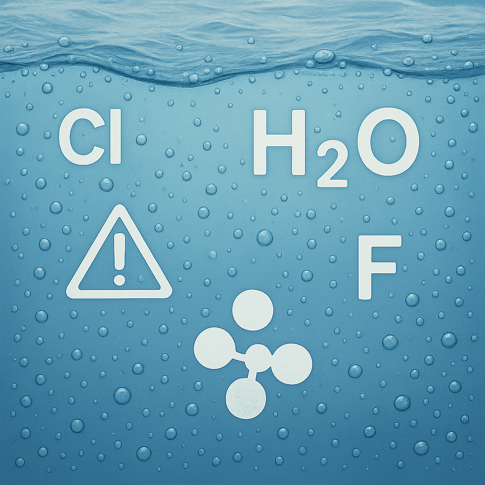

Sua água pode estar prejudicando seu gato e suas plantas — e você nem percebe

Por Plantas & Gatos — conteúdo prático para tutores e amantes de plantas
Muita gente confia na água da torneira para tudo: beber, cozinhar, regar plantas e até encher o potinho dos pets. Afinal, se é potável, deve ser segura, certo? Nem sempre. O que parece inofensivo pode estar escondendo um problema invisível que atinge diretamente quem depende dessa água: seus gatos e suas plantas.
O problema invisível na torneira
A água tratada que chega até a sua casa passa por processos rigorosos de purificação para garantir nossa segurança. Isso elimina microrganismos nocivos, mas também adiciona elementos químicos que, mesmo seguros para nós, podem ser prejudiciais para outros seres vivos quando consumidos diariamente.
O que realmente tem na sua água
Segundo as normas brasileiras de água potável, a água da torneira contém substâncias como:
Cloro (entre 0,5 a 2 mg por litro) → Obrigatório por lei como desinfetante, mas pode irritar o sistema digestivo de gatos e “queimar” as pontas das folhas das plantas.
Flúor (0,6 a 0,9 mg por litro) → Adicionado para prevenir cáries, mas gatos são mais sensíveis a esse composto do que humanos.
Metais como chumbo e cobre → Em quantidades mínimas para nós, mas que podem sobrecarregar os rins de animais pequenos ao longo do tempo.
Outros químicos de tratamento → Subprodutos do processo que se acumulam no organismo com o uso contínuo.
Para ter uma ideia da diferença: um gato de 5 kg recebe uma concentração por peso corporal cerca de 14 vezes maior que um adulto de 70 kg bebendo a mesma água.
Sinais de alerta no seu gato
Os felinos já têm rins naturalmente sensíveis, e a água da torneira pode estar piorando as coisas sem você perceber. Fique atento a:
- Recusa em beber água ou busca por outras fontes (torneiras pingando, vasos)
- Problemas urinários que aparecem com frequência
- Pelo sem brilho e aparência cansada
- Menos energia para brincar
- Preferência por água corrente em vez do potinho parado
Estudos mostram que cerca de 30% dos gatos idosos desenvolvem problemas renais, e a qualidade da água consumida ao longo da vida pode acelerar esse processo.
Sinais de alerta nas suas plantas
Se você rega suas plantas com água da torneira e elas não estão bem, pode haver uma conexão. O cloro e outros químicos causam:
- Pontas das folhas secas ou queimadas
- Amarelamento sem motivo aparente
- Crescimento lento ou interrompido
- Crosta branca no vaso (acúmulo de sais minerais)
- Solo com pH alterado (a maioria das plantas prefere solo levemente ácido)
Por que isso acontece?
A diferença está no tamanho e na sensibilidade. Gatos processam proporcionalmente muito mais líquido pelos rins que nós humanos, e plantas têm sistemas delicados que reagem mal ao excesso de químicos. O que é “pouco” para um adulto pode ser “muito” para seres menores e mais sensíveis.
Soluções práticas (e simples)
A boa notícia é que você não precisa de grandes mudanças ou gastos altos:
Para o seu gato:
- Deixe a água descansar → 24h em um recipiente aberto elimina boa parte do cloro
- Use um filtro simples → Modelos básicos de carvão já fazem muita diferença
- Água mineral ocasional → Especialmente se seu gato já tem histórico de problemas renais
- Fontes de água corrente → Muitos gatos preferem e bebem mais
Para suas plantas:
- Água descansada por 48h → Remove cloro e equilibra o pH
- Colete água da chuva → É naturalmente ácida e livre de aditivos (só armazene corretamente)
- Filtre antes de regar → O mesmo filtro que você usa para o gato serve para as plantas
Como saber se está funcionando:
- Observe se seu gato bebe mais água após a mudança
- Acompanhe se os problemas urinários diminuem
- Veja se as plantas ficam mais verdes e com crescimento mais vigoroso
- Note se o solo para de formar aquela crosta branca
Na prática...
O que parece apenas “água da torneira” pode estar impactando silenciosamente a saúde do seu gato e o desenvolvimento das suas plantas. Com dados oficiais mostrando que nossa água contém níveis seguros para humanos — mas não necessariamente ideais para outros seres vivos —, pequenos ajustes fazem toda a diferença.
A solução não é complicada nem cara. Com mudanças simples na forma como você oferece água, você pode prevenir problemas de saúde em pets e ver suas plantas prosperarem.
🌱🐾 Experimente por 30 dias e observe: seu gato mais hidratado e suas plantas mais viçosas podem ser o resultado de algo tão simples quanto melhorar a qualidade da água.
← Voltar para o blog